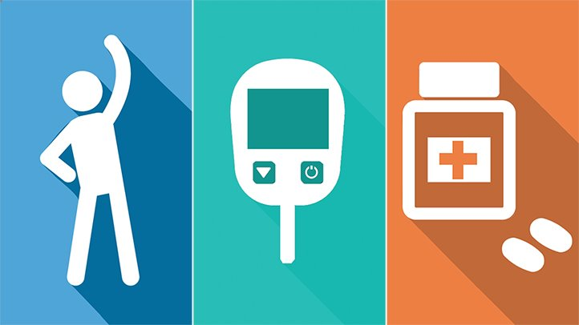

Sobre o Dietblr:
O projeto, criado em 2019, tem como objetivo reunir informações sobre a diabetes... Saiba mais

Outras Plataformas:


>


Anterior
Próximo
Controle de diabetes: Como deve ser feito?
Controle de diabetes: Como deve ser feito?
Diabetes tipo I: O que é?
07/abril/2019 - Maria Eduarda Rodrigues

Diabetes tipo 1 – É também conhecido como diabetes insulinodependente, diabetes infanto-juvenil e diabetes imunomediado. Neste tipo de diabetes a produção de insulina do pâncreas é insuficiente pois suas células sofrem o que chamamos de destruição autoimune. Os portadores de diabetes tipo 1 necessitam injeções diárias de insulina para manterem a glicose no sangue em valores normais. Há risco de vida se as doses de insulina não são dadas diariamente. O diabetes tipo 1 embora ocorra em qualquer idade é mais comum em crianças, adolescentes ou adultos jovens.
Diabetes tipo 2: O que é?
07/abril/2019 - Maria Eduarda Rodrigues

Diabetes tipo 2 – É também chamado de diabetes não insulinodependente ou diabetes do adulto e corresponde a 90% dos casos de diabetes. Ocorre geralmente em pessoas obesas com mais de 40 anos de idade embora na atualidade se vê com maior frequencia em jovens , em virtude de maus hábitos alimentares, sedentarismo e stress da vida urbana Neste tipo de diabetes encontra-se a presença de insulina porém sua ação é dificultada pela obesidade, o que é conhecido como resistência insulínica, uma das causas de HIPERGLICEMIA. Por ser pouco sintomática o diabetes na maioria das vezes permanece por muitos anos sem diagnóstico e sem tratamento o que favorece a ocorrência de suas complicações no coração e no cérebro.
Mitos e Verdades: Teste seu conhecimento sobre diabetes!

10 fake news de diabetes que circulam na internet
07/julho/2019 - Maria Eduarda Rodrigues

1 Beber suco de quiabo "suga" açúcar do sangue e elimina o diabetes (51.000 compartilhamentos)
2 Tomar suco de batata inglesa controla o diabetes e cura gastrite (31.943 compartilhamentos)
3 Elimine o diabetes em 5 dias apenas com dois ingredientes: chá de pau de canela e sopa de pó de cravo (2.105 compartilhamentos)
4 Infusão de folha de nespereira (ou folha de ameixa amarela) ajuda a produzir insulina, tratando o diabetes (1.998 compartilhamentos)
5 Beber suco de batata yacon cura diabetes em 30 dias (1.935 compartilhamentos)
6 Apenas uma abóbora para normalizar a glicose (1.558 compartilhamentos)
7 Chá de folha de manga possui um antioxidante que ajuda a tratar diabetes (1.181 compartilhamentos)
8 Vitamina de casca de abóbora, em jejum, ajuda a controlar o diabetes (1.007 compartilhamentos)
9 Beber um copo de suco de repolho por dia por pelo menos duas semanas reduz a glicose e cura o diabetes (998 compartilhamentos)
10 Chá de carqueja ajuda a baixar os níveis de glicose no sangue (756 compartilhamentos)
cake Receita de mousse de maracujá DIET
29/abril/2019 - Maria Eduarda Rodrigues

Ingredientes:
1 lata de creme de leite light;
1/2 lata de suco de maracujá;
gotas de adoçante a gosto.
Modo de preparo:
Bata todos os ingredientes no liquidificador e despeje esse creme em potes individuais ou em vasilha única de vidro.Enfeite com sementes de maracujá e leve para gelar até endurecer.
Sirva.